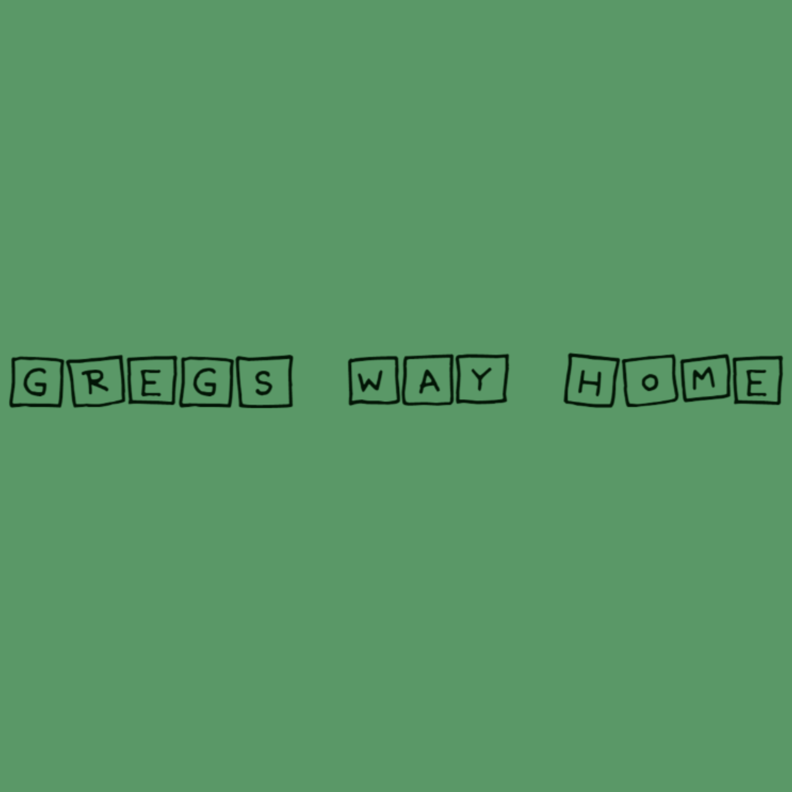

Games

This is the demo version of my original game Feline Minds. Join Volunteer 001 in his experiments in Newtonburg Labs, where there is a real cat-tastrope of puzzles. Control the cat through various different puzzles to help you unveil and progress through the story of the game.
Single-Player/Keyboard & Controller

Guide your ship into dangerous waters and defeat enemy ships. This was my first ever project, the requirements was to make a top down shooter that allows the player to defeat enemys and gain a score. Hope for updates on this game in the future.

Help guide Greg the Tree back home! This is my second ever project, I would hope to do new updates in the future.
.jpeg)
Join Isaiah Adams in a "thrilling" adventure in an apocaliptic world torn by a dangerous virus. This is one of my first ever projects and was never finished and time was not on my side with this one, but this is how it came out.

Extremely diffucult block pusher game, made to create a feeling of rage in the player.
.png)
Bullet hell shooter game, based off the hit-game Cuphead.This is my game called Stoveman, where you have to dodge and eliminate the evil chef, Chef GorDo. NOTE THERE IS A BUG WHERE YOU CANT RESTART(PLEASE RESTART GAME TO REPLAY)